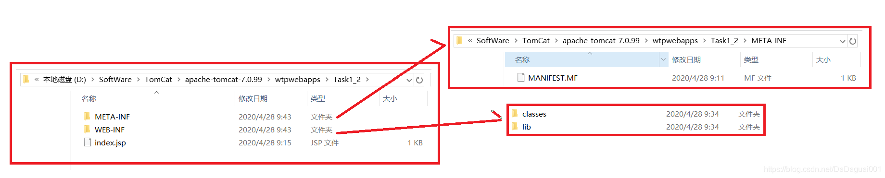
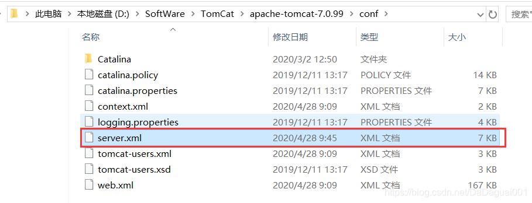
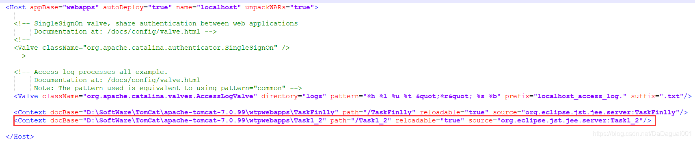
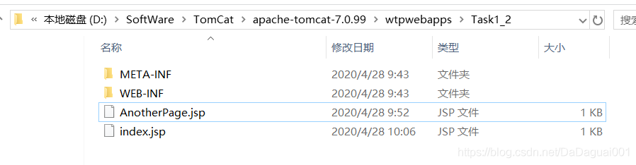
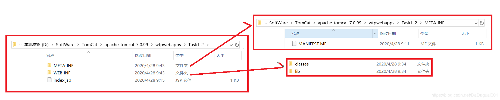
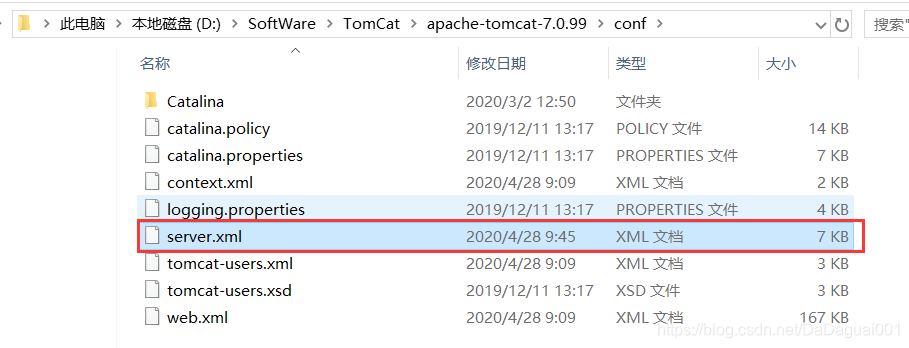
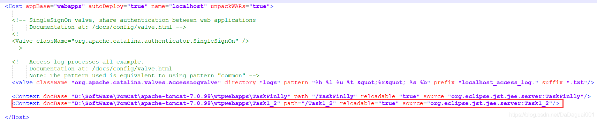
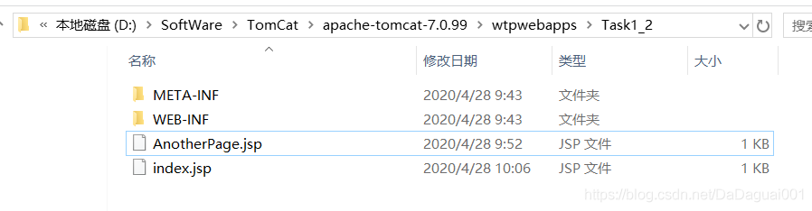

作业遇到，做一个笔记。
1 先在webapps下创建目录及对应文件

1.1 其中MANIFEST.MF文件里面为版本和路径信息，这里只填写了版本信息
Manifest-Version: 1.0
Class-Path:
1.2 另外两个为空文件夹
1.3 在项目根目录下面编写两个jsp页面，一个主页面，一个是跳转至的页面。

2 在tomcat下的配置文件中添加配置

（2.1）配置信息为这一条

3 编写一个jsp

4 最后一步，启动tomcat就行了
作业遇到，做一个笔记。
1 先在webapps下创建目录及对应文件

1.1 其中MANIFEST.MF文件里面为版本和路径信息，这里只填写了版本信息
Manifest-Version: 1.0
Class-Path:
1.2 另外两个为空文件夹
1.3 在项目根目录下面编写两个jsp页面，一个主页面，一个是跳转至的页面。
2 在tomcat下的配置文件中添加配置

（2.1）配置信息为这一条

3 编写一个jsp

4 最后一步，启动tomcat就行了

 点击重新获取
点击重新获取


 扫码支付
扫码支付
抵扣说明：
1.余额是钱包充值的虚拟货币，按照1:1的比例进行支付金额的抵扣。
2.余额无法直接购买下载，可以购买VIP、C币套餐、付费专栏及课程。
 余额充值
余额充值
举报


![]()
 3197
3197